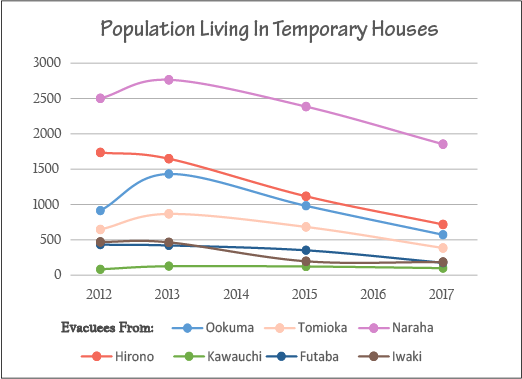

On March 11th, 2011, a destructive natural disaster known as the Great East Japan Earthquake occurred. A magnitude 9.1 earthquake occurred at the Pacific Sanriku offshore (Map 1) and the main disaster hit a northeastern part of Japan at 14:46 Tokyo time. Soon after the earthquake, a tsunami of around 40 m maximum height and 10 km maximum interior spilled onto the coastline. It ended up both destroying and swiping a broad swath of coastal land.
As a result of the earthquake-tsunami combination, the Fukushima-Daiichi nuclear power plant exploded and caused a nuclear crisis with severe long-term impacts to the surrounding areas. The Great East Japan Earthquake resulted in the following: a) the destruction of over 270,000 buildings; b) over 400,000 people being evacuated; and c) over 20,000 casualties.
Usually, in case of natural disasters, local or regional governments will response and lead the situation. However, since the scale of disaster was extremely huge and destructive, regional governments could not function at the Great East Japan Earthquake event. It took a longer time to grasp the whole damaging situation because the affected area was too large to be observed by helicopters or planes, and many roads were destroyed that created a lot of isolated areas. The damaged area was about 500km north to south and 200km east to west.
| Location | 38.297 °N 142.373 °E |
|---|---|
| Magnitude | 9.1 |
| Depth | 29 km |
| Origin Time | 3/11/2011 2:46:24 PM (GMT +9) |
| Max Tsunami | 40 m High, 10 km Interior |
| Casualties | 20,000 + |
| Building Damage | 270,000 + |
| Evacuee Population | 400,000 + |
Table 1. Main Shock Summary
Map 1
Iwaki City, Fukushima which is located 200 km north of Tokyo was affected by the earthquake and tsunami. However, the city accepts evacuees from the “difficult-to-return-zone” which is within 30km from the nuclear power plant.
Iwaki City is...
Below is the summary of the main shock damage in the Iwaki City.
| Number of Direct Death | 293 |
|---|---|
| Number of Related Death | 134 |
| Number of Missing People Reported As Death | 37 |
| Total Number of Death | 464 |
| Complete Destruction | 7,902 |
|---|---|
| Large Scale Destruction | 9,253 |
| Half Destruction | 33,146 |
| Partial Destruction | 40,879 |
| Total Number of Damaged Buildings | 91,180 |
Table 2. Human and Building Damage
Map 2
This map introduces some of the damages and recovery of the disaster in Iwaki. Each point contains 2 images that shows the aftermath of the disaster and the recovery (by 2016).
Photo Credit: Iwaki City, Hiroko Ishikawa, Fukushima Prefecture EMAC, Ken Midorikawa, Dai Suzuki, JGSDF 8th Infantry Regiment, Takayuki Saito, Board of Education, Koichi Hosokawa, Fukushima Prefecture EMAC, Iwaki Construction Office, Tokuji Watanabe
*Jump to the actual web map
The map shows the temporary houses in Iwaki City.
The Graph 1 shows the Population Change living in the temporary housing communities based on where the evacuees are from.

Graph 1
Iwaki is divided into 13 districts. Taira, Onahama, Uchigo are urban areas.
Hisanohama has a higher population declining rate. Why is that?
Overall, the population is declining even when Iwaki accepted evacuees from other towns. Why is that?
Map 3
From 2013-2016, population is increasing in urban area. Because....
Map 4
I am a graduate student in University of Minnesota - Twin Cities in the Master in Geographic Information Science (GIS) program. I currently hold a Bachelor of Arts Degree from the University of Minnesota - Duluth in GIS with minor in Geography.